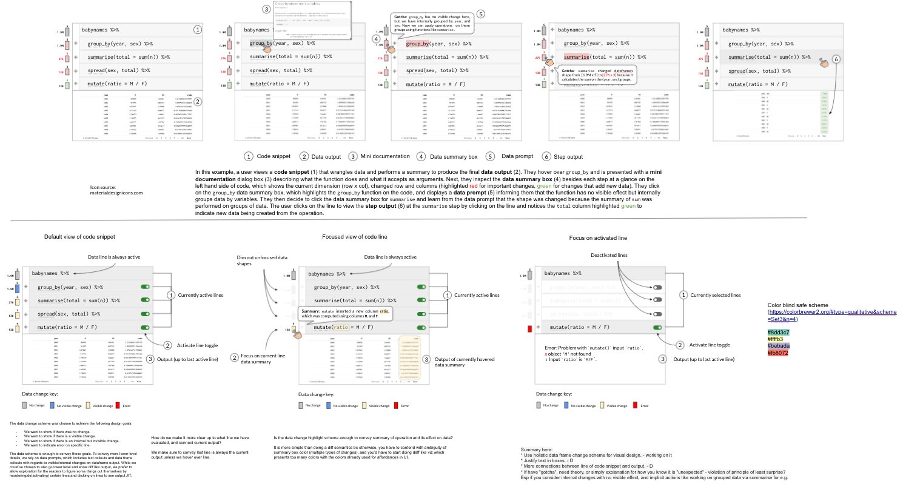
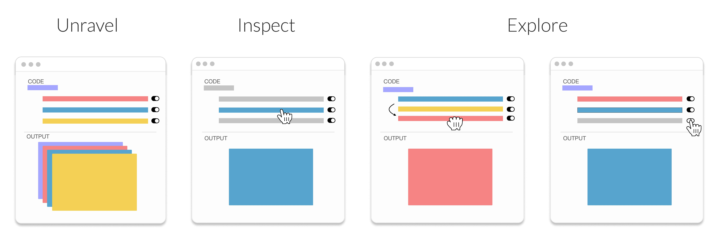

Motivation
During my fifth to sixth year in PhD, I was left wondering what I wanted to build to round off my dissertation. I knew I wanted to do something exciting, and had been exploring several tools around comprehending data science code and output. For example, I’ve always been super appreciative of tools like Python Tutor that helps beginners in Python step through code forwards and backwards, watch how variables are populated, and even show how functions are called. What attracted me most about this was the magic of time travel debugging, a technique where you replay the events of the program to help you debug issues. Try clicking ‘Next’ and ‘Prev’ to move forwards and backwards on this simple example here:
I liked this tool so much I wanted it for understanding and tracing transformations within a {dplyr} pipe chain like this one:
starwars %>%
group_by(species) %>%
summarise(
n = n(),
mass = mean(mass, na.rm = TRUE)
) %>%
filter(
n > 1,
mass > 50
)The code above uses a design pattern called the fluent API, a way of writing domain specific code where typically you build up operations by chaining them together (dot notation or pipes %>%. The code also has “structure”, each line of the code are steps, and the order of these steps can matter since we’re building up transformations to produce some meaningful output like summary stats of different starwar species and their average mass. The problem is that although we have nice legibility, it’s harder to trace what happens at each step and how data was transformed.
I initially built a web app using the {shiny} just like Python Tutor thanks to a neat library called CodeMirror—version 5 not the new version 6 which I hear is great. Unfortunately this version is buried somehwere in my directories and I can’t reference it here. But, while this was cool and all, there were a lot of missing pieces, more information that is needed beyond just printing the output at each step.
I had a meeting with my advisor Chris and colleage Titus, and we discussed the idea of opening up the exploration and focusing on key information one might want at each step. I did a ton of brainstorming and sketching… like a lot.

Enter Unravel

Unravel is a project that explores interactive exploration of data science code written in R. Unravel (paper + talk), enables data scientists to interactively inspect, understand and explore data wrangling code written using a fluent API like the tidyverse.
This is just a teaser blog post to what I’m realizing is about to be a series so keep an eye on the next part where I dive deeper into how I designed Unravel.